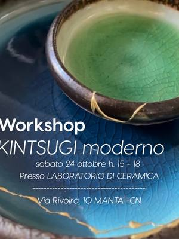
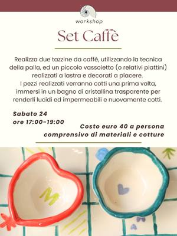
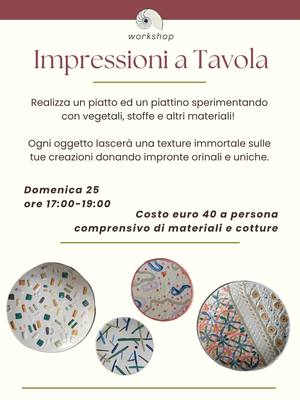

Corsi e workshop di ceramica a Torino e dintorni
Corsi di ceramica, tornio, modellazione, decorazione e kintsugi a Torino, Cuneo e dintorni: date, prezzi e come iscriversi.
Cerca tutti i workshop36 attività in arrivo · aggiornato il 21 ottobre 2026
- ven23ottCeramicaCrea la tua tazza: incisioni e rilievivenerdì 23 ottobre, 10:00–12:00San Salvario (TO) · 48 €con Pottery Lab con Rud
- sab24ottCeramicaWorkshop di decorazione: ingobbi e sgraffitosabato 24 ottobre, 13:00–15:30San Salvario (TO) · 48 €con Pottery Lab con Marta

sab24ottCeramicaWorkshop di kintsugi: riparare con l’orosabato 24 ottobre, 15:00–18:00Manta (CN)con Komorebi Lab
sab24ottCeramicaSet Caffè: tazzine e vassoiettosabato 24 ottobre, 17:00–19:00Vanchiglia (TO) · 40 €con Il Nicchio di via Monti dom25ottCeramicaPottery Brunch: ceramica e colazionedomenica 25 ottobre, 09:30–11:30San Salvario (TO) · 55 €con Pottery Lab
dom25ottCeramicaPottery Brunch: ceramica e colazionedomenica 25 ottobre, 09:30–11:30San Salvario (TO) · 55 €con Pottery Lab dom25ottCeramicaStrange Creatures: gioiello in argilladomenica 25 ottobre, 15:00–17:00San Donato (TO)con Samaneh Vahabi per Orso Objetos
dom25ottCeramicaStrange Creatures: gioiello in argilladomenica 25 ottobre, 15:00–17:00San Donato (TO)con Samaneh Vahabi per Orso Objetos- dom25ottCeramicaWorkshop di gioielli: orecchini in porcellanadomenica 25 ottobre, 15:00–17:00San Salvario (TO) · 48 €con Pottery Lab

dom25ottCeramicaImpressioni a Tavola: piatti con texturedomenica 25 ottobre, 17:00–19:00Vanchiglia (TO) · 40 €con Il Nicchio di via Monti mar27ottCeramicaRealizza la tua Tazza: lastra e ingobbiomartedì 27 ottobre, 18:30–20:30Vanchiglia (TO) · 40 €con Il Nicchio di via Monti
mar27ottCeramicaRealizza la tua Tazza: lastra e ingobbiomartedì 27 ottobre, 18:30–20:30Vanchiglia (TO) · 40 €con Il Nicchio di via Monti gio29ottCeramicaClay & Chill: serata con l’argillagiovedì 29 ottobreTorinocon Limaco’s Lab
gio29ottCeramicaClay & Chill: serata con l’argillagiovedì 29 ottobreTorinocon Limaco’s Lab gio29ottCeramicaColora & Gusta: ceramica e pizzagiovedì 29 ottobre, 20:00–22:30San Salvario (TO) · 39 €con Aperi Pods
gio29ottCeramicaColora & Gusta: ceramica e pizzagiovedì 29 ottobre, 20:00–22:30San Salvario (TO) · 39 €con Aperi Pods ven30ottCeramicaAperipottery: argilla e aperitivovenerdì 30 ottobre, 18:30–20:30San Salvario (TO) · 55 €con Pottery Lab
ven30ottCeramicaAperipottery: argilla e aperitivovenerdì 30 ottobre, 18:30–20:30San Salvario (TO) · 55 €con Pottery Lab sab31ottCeramicaKintsugi e tè: riparare con l’orosabato 31 ottobre, 10:00–13:00Bra (CN)con Komorebi Lab
sab31ottCeramicaKintsugi e tè: riparare con l’orosabato 31 ottobre, 10:00–13:00Bra (CN)con Komorebi Lab sab31ottCeramicaLaboratorio di ceramica: set da colazionesabato 31 ottobre, 14:00–18:00Pinerolo (TO) · 55 €con Pauta Pot per 39/ Tramediffuse
sab31ottCeramicaLaboratorio di ceramica: set da colazionesabato 31 ottobre, 14:00–18:00Pinerolo (TO) · 55 €con Pauta Pot per 39/ Tramediffuse- dal7novCeramicaCorso di ceramica del sabato: 5 incontrida sabato 7 novembre, ogni sabatoAurora (TO)con Aquarius Ceramica
 dom8novCeramicaKintsugi e apericena: riparare con l’orodomenica 8 novembre, 17:00–20:00Prunetto (CN)con Komorebi Lab
dom8novCeramicaKintsugi e apericena: riparare con l’orodomenica 8 novembre, 17:00–20:00Prunetto (CN)con Komorebi Lab- sab14novCeramicaDare Forma: ceramica e psicoterapiasabato 14 novembre, 09:30–11:30San Salvario (TO)con Pottery Lab con Stefania Barbagallo e Marta Pais
- dom15novCeramicaDecora il tuo Natale: ceramiche nataliziedomenica 15 novembre, 13:30–15:30San Salvario (TO) · 25 €con Pottery Lab
- lun16novCeramicaCrea il tuo piatto: ciotole e svuotataschelunedì 16 novembre, 18:00–20:00San Salvario (TO) · 48 €con Pottery Lab con Roberta
- dal17novCeramicaCorso di ceramica: tornio o modellatoda martedì 17 novembreAurora (TO) · 100 € per 4 incontricon Aquarius Ceramica
 mer18novCeramicaColora & Gusta: ceramica e pizzamercoledì 18 novembreSan Salvario (TO) · 39 €con Aperi Pods
mer18novCeramicaColora & Gusta: ceramica e pizzamercoledì 18 novembreSan Salvario (TO) · 39 €con Aperi Pods- sab21novCeramicaTillandsia: vasi sospesi in ceramicasabato 21 novembre, 16:00–18:00San Salvario (TO) · 48 €con Pottery Lab
- sab28novCeramicaEsperienza Kintsugi: riparare con l’orosabato 28 novembre, 14:30–18:30San Salvario (TO) · 120 €con Pottery Lab con Diletta
- dataa sceltaAltroCascina Roccafranca: corsi della stagioneData a sceltaMirafiori (TO)con Cascina Roccafranca
 dataa sceltaCeramicaCorso di ceramica: modellazione e smaltiData a sceltaVanchiglia (TO) · 120 € per 4 lezionicon Il Nicchio di via Monti
dataa sceltaCeramicaCorso di ceramica: modellazione e smaltiData a sceltaVanchiglia (TO) · 120 € per 4 lezionicon Il Nicchio di via Monti- dataa sceltaCeramicaCorso di tornio: lezioni per dueData a sceltaVanchiglia (TO) · 45 € a lezionecon Il Nicchio di via Monti
 dataa sceltaCeramicaWorkshop di ceramica: modellazione ed engobbiData a sceltaQuadrilatero (TO) · 50 €con Ouimiel Studio
dataa sceltaCeramicaWorkshop di ceramica: modellazione ed engobbiData a sceltaQuadrilatero (TO) · 50 €con Ouimiel Studio- dataa sceltaCeramicaL’albero della vita: scultura in terracottaData a sceltaSan Salvario (TO) · 95 €con Pottery Lab con Marta Pais
- dataa sceltaCeramicaLaboratorio libero: ceramica in autonomiaData a sceltaSan Salvario (TO) · 50 € per 10 orecon Pottery Lab
- dataa sceltaCeramicaCorso di modellazione: lastra e colombinoOgni settimana, in più turniSan Salvario (TO) · 150 € per 4 lezionicon Pottery Lab
- dataa sceltaCeramicaCorso di tornio: quattro incontriOgni martedì, mercoledì, giovedì o sabatoSan Salvario (TO) · 150 € per 4 lezionicon Pottery Lab con Roberta Dalpasso
 dataa sceltaCeramicaCorso di decorazione: ceramica dipintaData a sceltaCit Turin (TO)con Scialabà
dataa sceltaCeramicaCorso di decorazione: ceramica dipintaData a sceltaCit Turin (TO)con Scialabà dataa sceltaCeramicaCorso di gioielli: porcellana e argillaData a sceltaCit Turin (TO) · 125 €con Scialabà
dataa sceltaCeramicaCorso di gioielli: porcellana e argillaData a sceltaCit Turin (TO) · 125 €con Scialabà- dataa sceltaCeramicaCorso di ceramica: lastra e tornioData a sceltaCit Turin (TO) · 120 €con Scialabà
- dataa sceltaCeramicaCorso di tornio: centratura e formeData a sceltaCit Turin (TO) · 120 €con Scialabà
- ognigioCeramicaIl tè delle cinque: decora una tazzaOgni giovedì, 17:00–18:30San Salvario (TO) · 25 €con Pottery Lab con Diletta